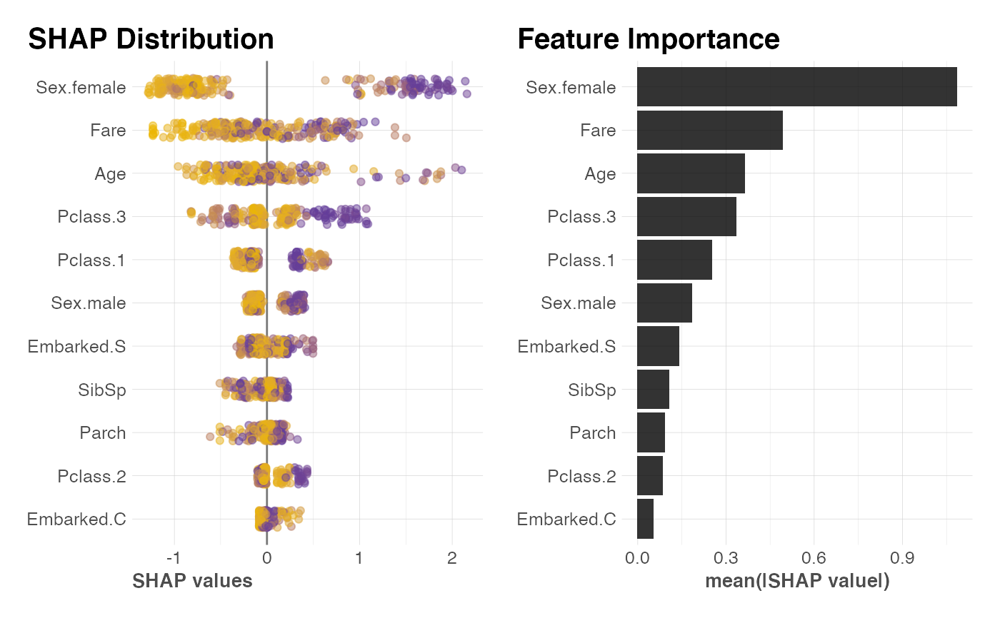
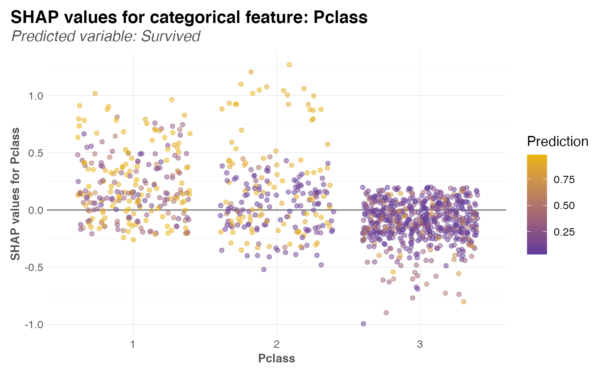

SHAP-based dependence plots for categorical/numerical features (PDP)
Source:R/shapley.R
shap_var.RdHaving a h2o_shap object, plot a dependence plot for any
categorical or numerical feature.
shap_var(x, var, keep_outliers = FALSE)
Arguments
| x |
|
|---|---|
| var | Variable name |
| keep_outliers | Boolean. Outliers detected with z-score and 3sd may be suppress or kept in your plot. Keep them? |
See also
Other SHAP:
h2o_shap()
Examples
# \donttest{ # Train a h2o_automl model model <- h2o_automl(dft, Survived, max_models = 1, target = TRUE, ignore = c("Ticket", "Cabin", "PassengerId"), quiet = TRUE)#># Calculate SHAP values SHAP_values <- h2o_shap(model) # Equivalent to: # SHAP_values <- h2o_shap( # model = model$model, # test = model$datasets$test, # scores = model$scores_test$scores) # Check SHAP results head(SHAP_values)#> Embarked. Embarked.C Embarked.Q Embarked.S Embarked.missing(NA) Pclass.1 #> 1 0 -0.016172949 0 -0.29193878 0 -0.1366402 #> 2 0 0.030671917 0 0.10123164 0 -0.1683410 #> 3 0 -0.002312915 0 -0.21820031 0 0.3799084 #> 4 0 -0.048526943 0 -0.10208388 0 -0.2419950 #> 5 0 -0.014931759 0 -0.10021029 0 -0.2011766 #> 6 0 -0.042441979 0 -0.05190469 0 -0.3541477 #> Pclass.2 Pclass.3 Pclass.missing(NA) Sex.female Sex.male #> 1 -0.09373002 -0.5836065 0 0.9762868 0.14309540 #> 2 0.34105134 0.7329425 0 1.6378776 0.38800800 #> 3 -0.08315454 0.9170670 0 1.6738037 0.19151062 #> 4 -0.03337902 -0.2984058 0 -0.5595701 -0.06690116 #> 5 0.18938544 0.2233415 0 -0.9172428 -0.18587068 #> 6 0.15069361 0.2544931 0 -1.1708840 -0.19691926 #> Sex.missing(NA) Age SibSp Parch Fare BiasTerm #> 1 0 0.04011337 0.10019200 -0.26746514 -0.09150444 -0.5529287 #> 2 0 -0.08630542 -0.28145978 0.09000881 -0.28903997 -0.5529287 #> 3 0 -0.63032365 0.09090502 0.15772459 0.22187108 -0.5529287 #> 4 0 -0.52631372 -0.07494080 -0.29360130 -0.28823370 -0.5529287 #> 5 0 0.03926394 0.04930381 -0.06246427 0.26587784 -0.5529287 #> 6 0 0.45617509 0.13890523 0.10938925 0.32308114 -0.5529287# Plot some of the variables (categorical) shap_var(SHAP_values, Pclass)# Plot some of the variables (numerical) shap_var(SHAP_values, Fare)# }